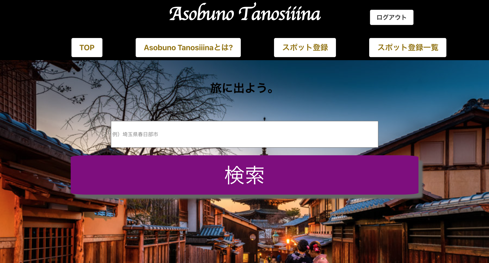

HAYATO KUDO
皆様初めまして
工藤颯人と申します
HP風自己紹介サイトを作成してみました！
自己紹介
SELF INTRODUCTION
| 名前 | 工藤颯人 |
|---|---|
| 生年月日 | 1999年3月27日 |
| 出身校 | 埼玉県越谷市立出羽小学校→埼玉県春日部市立緑小学校→埼玉県春日部市立緑中学校→埼玉県立岩槻商業高等学校→共栄大学・国際経営学部・経営学科 |
| 自己紹介 | 工藤颯人と申します。 平成11年3月27日に埼玉県越谷市で生まれ、小学4年生のときに埼玉県春日部市に引っ越し、現在は春日部市在住です。 大学では国際経営学部・経営学科を専攻し、卒業しましたがコンピューターのプログラミングに興味があり、卒業後、実際の仕事に極めて近いハイレベルなカリキュラムを行うことで業界でも有名なプログラミングスクール『ポテパンキャンプ』に入校しました。当該スクールでは卒業後、就職先での即戦力、そして一生使えるスキルを身につけたいとの思いから非常に難易度が高く途中挫折者が多いと言われている「Railsキャリアコース」を専攻しました。実際に何度も諦めかけましたが必ずやり遂げるとの強い思いからスクールが掲げる最短受講期間で全カリキュラムをクリアし卒業できました。卒業した事によりプラグラミングスキルはもちろんのこと、課題 解決力や自走力においても身についたと実感しています。今後も継続して学習し、一つでも多くの知識と技術を身につけ、さらなるスキルアップを目指します。 |
趣味・特技
Hobbies and special skill
1.
スノーボード
１つ目は、スノーボードです。毎年10回は必ず行くほど好きです！
スノーボードの好きなところは、頂上から見る絶景から一気に滑ってくる楽しさがとても魅力的です！
しかしゲレンデで携帯を無くすと最悪です。（2回経験有）
2.
ランニング
２つ目は、ランニングです。趣味というよりも私のリフレッシュ方法です。プログラミングの勉強で息詰まってしまった時には、家の近くの土手沿いを走ると頭がリセットされ、思考が働きやすくなる気がします。
3.
ホームページ作成
３つ目は、ホームページ作成です。大学生の時からの趣味で、WordPressなどを用いてホームページを作っていました。過去には、「ラーメン屋さん、石垣島のホテル、美容室」のホームページを作成しました。私がITに興味を持ったきっかけでもあります。
その他の成果物
DELIVERABLES
リアルタイムフィルター
JavaScriptを用いて、リアルタイムフィルターを作成致しました。検索したキーワードを表示するよう設定し、それ以外は表示されません。
※画像をクリックすると拡大します。
※PCでご覧ください。
スライドショー
slickを用いてスライドショーを作成致しました。４秒経つと自動でスライドされ、矢印を押すと手動でもスライドされるよう設定致しました。

※画像をクリックすると拡大します。
※PCでご覧ください。
ストップウォッチ
JavaScriptを用いてストップウォッチを作成致しました。小数点第一位まで表示させクリック時の追加イベントなどを使い作成致しました。

※画像をクリックすると拡大します。
※PCでご覧ください。
ECサイトの作成
docker環境とcircleciを構築し、ECサイト作成致しました。各商品ページを作成し、初めてRspecでテストコードを記載し作成致しました。

※画像をクリックすると拡大します。
※PCでご覧ください。